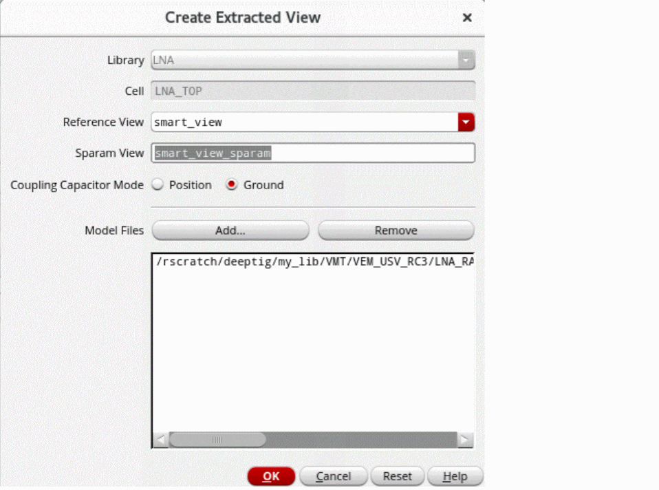
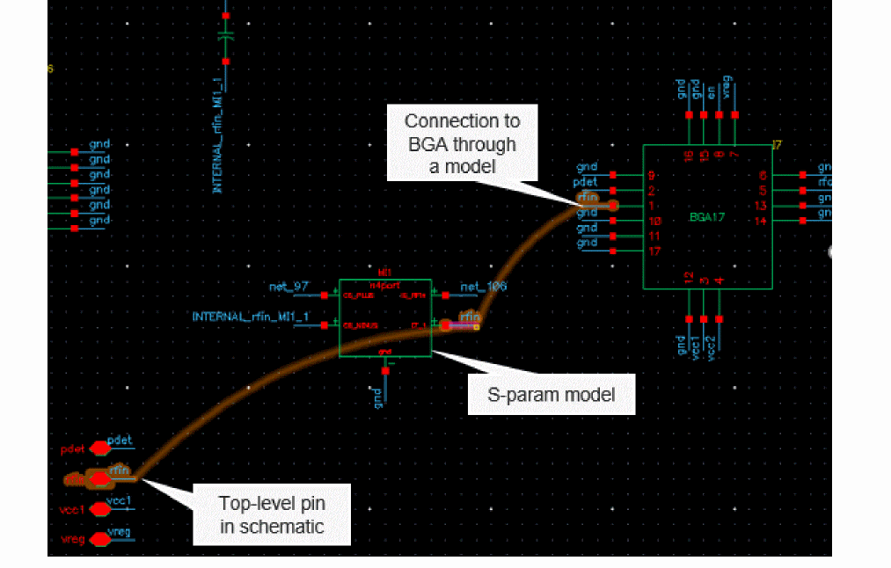
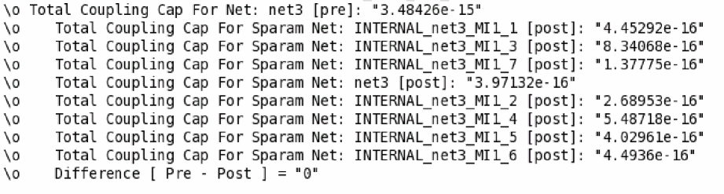

Creating Extracted Views from Models
After validating the EM simulation results, you can create of an extracted view. While creating an extracted view, Virtuoso creates a copy of the schematic and replaces the modeled devices with an n-port that points to the S-Parameters saved in the EM simulation results. It also saves the S-parameter file inside the target cellview.
To create an extracted view for a model selected in the Electromagnetic Solver assistant:
- Select the models that meet the following conditions in the assistant.
-
Click Create Extracted View on the toolbar of the Electromagnetic Solver assistant.
The Create Extracted View form is displayed.
This form shows the library, cell, and view name for the extracted view. - In the Reference View drop-down list, choose the name of the view that you want to use as a connectivity reference to stitch the devices and nets from the S-parameter model. You can use a schematic view, Quantus Smart View, or another layout view as a reference.
-
(Optional) In the Sparam View field, specify a name for the extracted view to be created.
The default name used for an extracted view isemsolver_extracted. - Specify Position or Ground to stitch a coupling capacitor when one of the two nets attached to the capacitor is included in the model.
- Use the Add and Remove commands to modify the Model Files list so that it contains all the files to be included in the extracted view.
- Click OK.
In non-interactive mode, the tool automatically places the device models in the schematic and saves the specified extracted view.
While placing the devices, the tool does the following:
-
While stitching an S-param model into a package schematic view, the tool looks for package components and connects the external top-level pin in the schematic to the package component through the S-parameter. Connections from other device instances to the package instance are also recreated through the S-parameter.
In the following example, the top-level pinrfinis connected to the package instanceBGA17through the S-param model.
 - Checks and reports the following scenarios as errors:
-
Does not report errors for any extra pins found in the schematic for which the property to ignore pins is set and no corresponding S-parameter port exists in the model. Common examples of such pins are the bulk or substrate pins of devices. If you set a property to ignore the extra pins, the tool does not report errors and retains the pins connected to the nets in the schematic.You can use the
propsUsedToIgnoreObjsenvironment variable to specify the name of the property to be used to ignore devices. Use the following command to get the property names:envGetVal("layoutXL" "propsUsedToIgnoreObjs")
-
If the reference view is a Smart View, the tool checks the value of the couplingCapMode
environment variable to decide how to stitch a coupled capacitor when one of the two nets attached to the capacitor is included in the model. After stitching, the tool reports the total coupling capacitance value of each net that was in the model before and after the insertion of an n-port. It also reports the difference between the two values.
 - Checks for cellviews specified in the setNotEmbedded environment variable. The tool considers the instances of the specified cellviews as non-embedded components and excludes those from the extracted cellviews.
You can refer to the saved extracted view in ADE Explorer or ADE Assembler, and send it to Spectre for the re-simulation flow. After the simulation is run, compare the results saved for the schematic view with the results saved for the extracted view.
Related Topics
Return to top